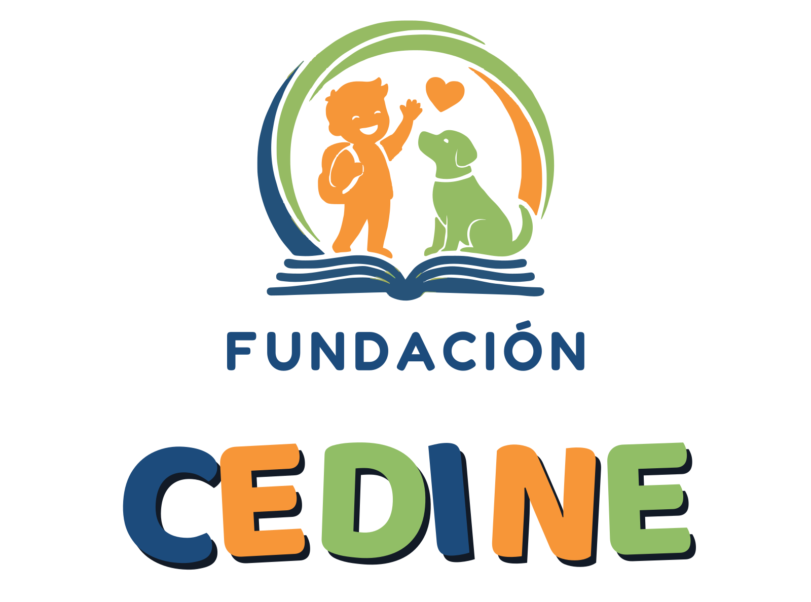

Acompañamos el desarrollo pedagógico y terapéutico de niños y jóvenes con necesidades educativas y discapacidad en zonas vulnerables de Colombia.
“Cuestión de actitud”

Centro de Diagnóstico de Necesidades Educativas
NIT 900.773.102-4 • Matrícula S00047132
Explora nuestra historia, nuestras terapias especializadas, nuestras jornadas reales o cómo sumarte como aliado.
Conoce qué significa nuestro símbolo, nuestra metodología de inclusión y el respaldo legal en Bogotá.
Diagnóstico pedagógico, zooterapia asistida con perros, terapia motriz al aire libre y terapia acuática.
Recorre nuestra galería interactiva de sesiones reales con niños, familias y perros de terapia.
Canales oficiales de donación con beneficio tributario RTE, teléfonos y WhatsApp directo.
“Cuestión de actitud”